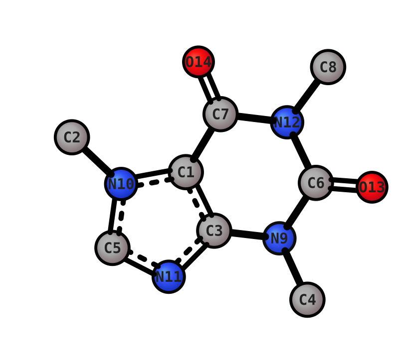
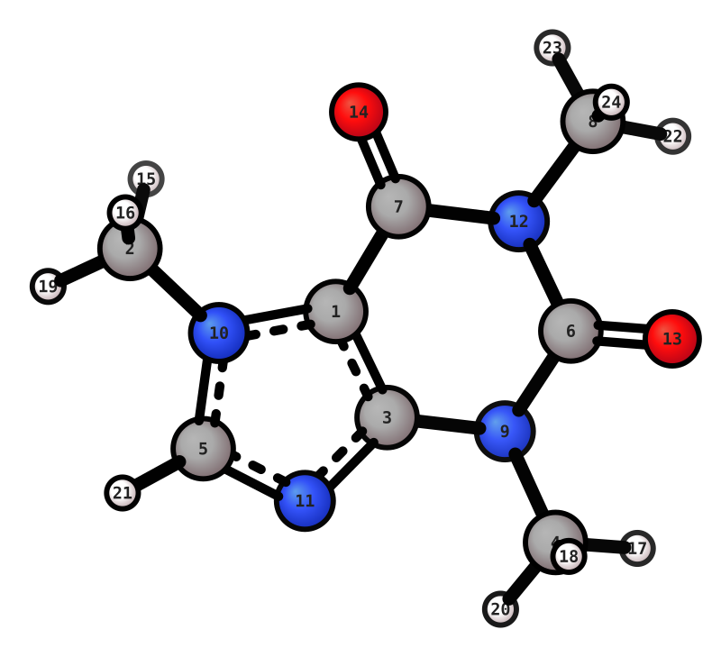
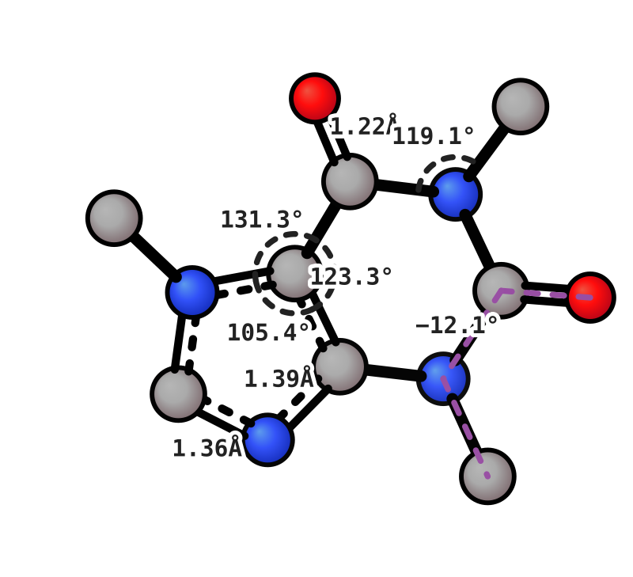
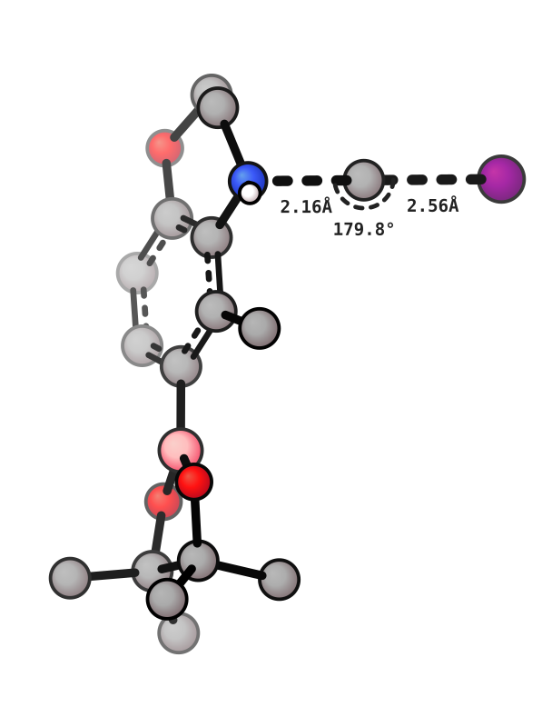
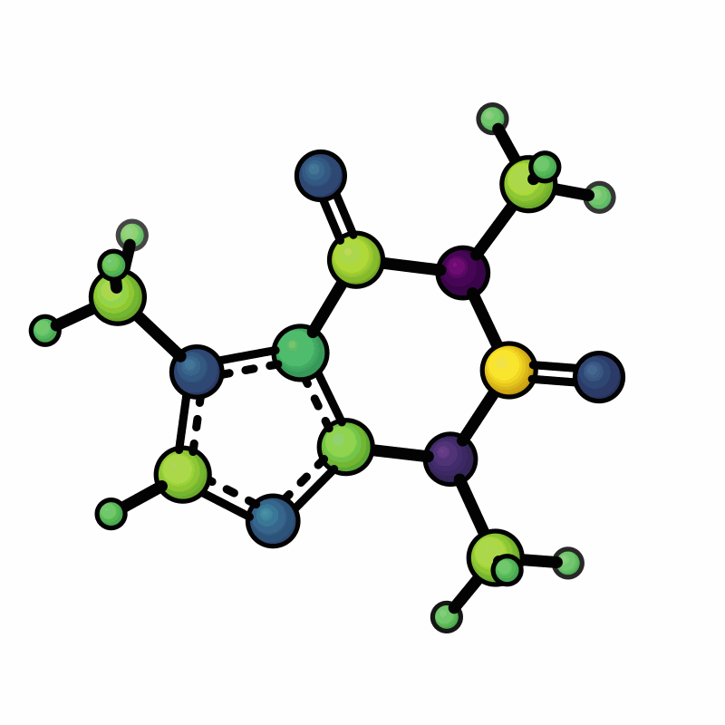
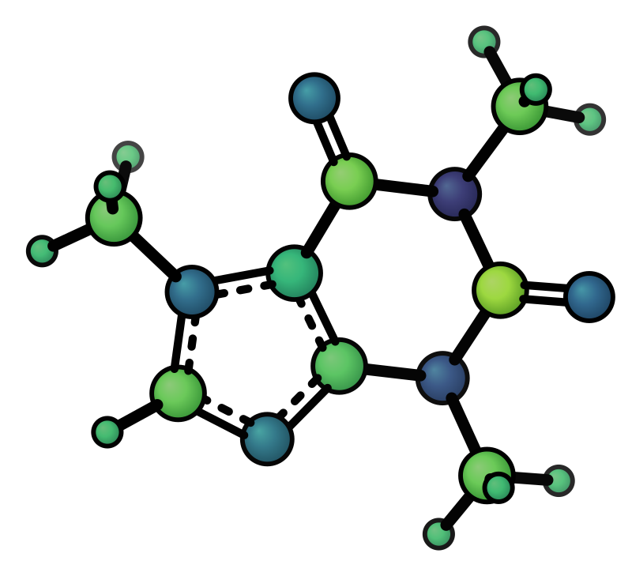
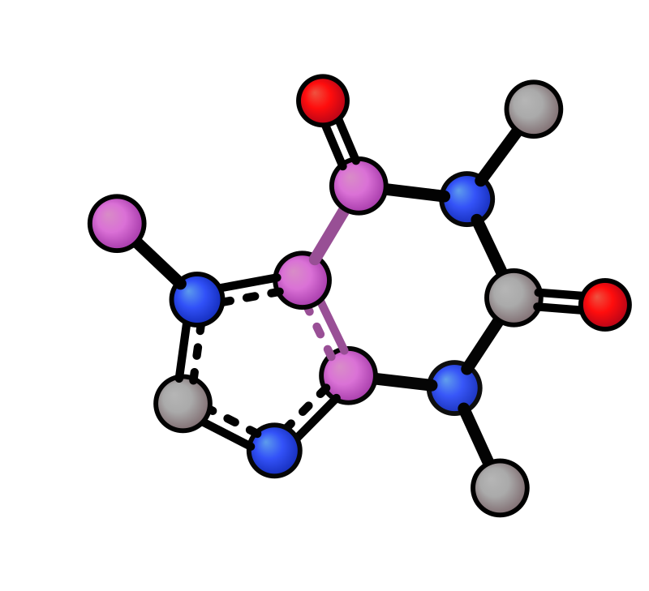
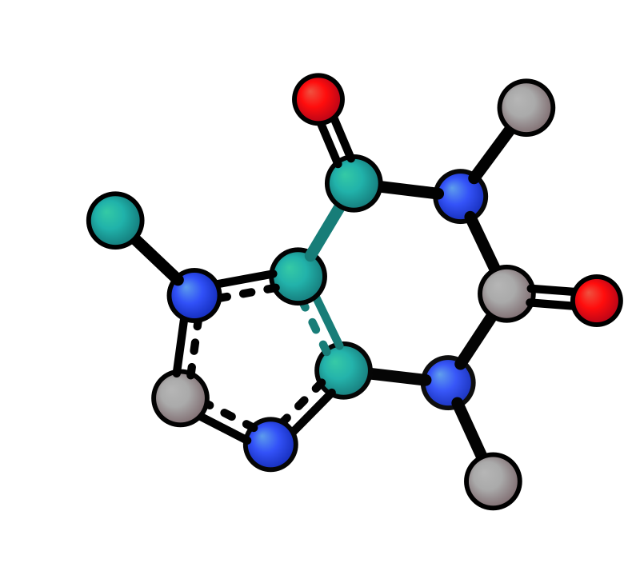
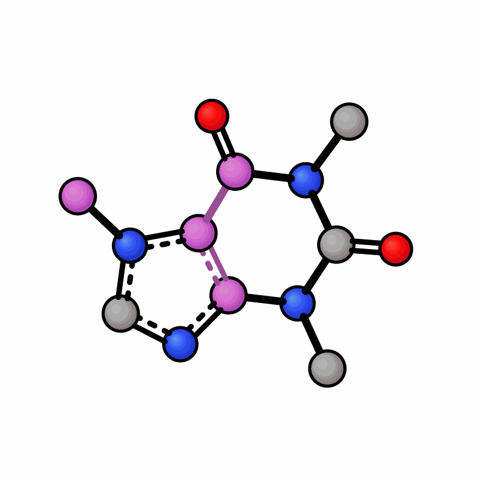

Annotations¶
Atom indices¶
Add atom index labels centred on every atom in the SVG with --idx. Three format options:
Symbol + index (default) |
Index only |
|---|---|
 |
 |
xyzrender caffeine.xyz --idx # symbol + index (C1)
xyzrender caffeine.xyz --hy --idx n --label-size 25 # index only (1)
xyzrender caffeine.xyz --hy --idx s # symbol only (C)
SVG annotations (-l)¶
Annotate bonds, angles, atoms, or dihedrals with computed or custom text. The last token of each spec determines its type. All atom indices are 1-based. -l is repeatable.
Spec |
SVG output |
|---|---|
|
Distance text at the 1–2 bond midpoint |
|
Distance on every bond incident to atom 1 |
|
Arc at atom 2 (vertex) + angle value |
|
Colored line 1-2-3-4 + dihedral value near bond 2–3 |
|
Custom text near atom 1 |
|
Custom text at the 1–2 bond midpoint |
Distances + angles + dihedrals |
Custom annotation |
|---|---|
 |
xyzrender caffeine.xyz -l 13 6 9 4 t -l 1 a -l 14 d -l 7 12 8 a -l 11 d
xyzrender caffeine.xyz -l 1 best -l 2 "NBO: 0.4"
Bulk label file (--label)¶
Same syntax as -l, one spec per line. Lines whose first token is not an integer (e.g. CSV headers) are silently skipped. Comment lines (#) and quoted labels are supported.

# sn2_label.txt
2 1 d
1 22 d
2 1 22 a
xyzrender sn2.out --ts --label sn2_label.txt --label-size 40
Atom property colormap (--cmap)¶
Color atoms by a per-atom scalar value (e.g. partial charges) using a Viridis-like colormap.
Mulliken charges |
Symmetric range |
|---|---|
 |
 |
The colormap file has two columns — 1-indexed atom number and value. Any extension works. Header lines (first token not an integer), blank lines, and # comment lines are silently skipped.
# charges.txt
1 +0.512
2 -0.234
3 0.041
xyzrender caffeine.xyz --hy --cmap caffeine_charges.txt --gif-rot -go caffeine_cmap.gif
xyzrender caffeine.xyz --hy --cmap caffeine_charges.txt --cmap-range -0.5 0.5
Atoms in the file: colored by Viridis (dark purple → blue → green → bright yellow)
Atoms not in the file: white (
#ffffff). Override with"cmap_unlabeled"in a custom JSON presetRange defaults to min/max of provided values; use
--cmap-range vmin vmaxfor a symmetric scale
Atom highlight (--hl)¶
Color specific atoms and their connecting bonds. Accepts 1-indexed atom ranges.
Default (orchid) |
Custom colour |
Rotation |
|---|---|---|
 |
 |
 |
xyzrender caffeine.xyz --hl "1-3,7" # orchid (default)
xyzrender caffeine.xyz --hl "1-3,7" --hl-color lightseagreen # custom colour
xyzrender caffeine.xyz --hl "1-3,7" --gif-rot -go hl.gif # works in GIFs
render(mol, highlight="1-3,7") # string (1-indexed)
render(mol, highlight=[0, 1, 2, 6]) # list (0-indexed)
render(mol, highlight="1-3,7", highlight_color="red") # custom colour
Vector arrows¶
Overlay arbitrary 3D vectors as arrows on the rendered image via a JSON file. Useful for dipole moments, forces, electric fields, transition vectors, etc.
Dipole moment |
Rotation |
|---|---|
|
|


xyzrender ethanol.xyz --vector ethanol_dip.json -o ethanol_dip.svg
Each entry in the JSON array defines one arrow:
Key |
Type |
Default |
Description |
|---|---|---|---|
|
|
required |
Three numeric components (x,y,z). Use the same coordinate units as the input (Å). Example: |
|
|
|
Tail location: |
|
|
|
Arrow color. Accepts hex ( |
|
string |
|
Text placed near the arrowhead (e.g. “μ”). Suppressed when a dot or × symbol is rendered (see below). |
|
float |
|
Per-arrow multiplier applied on top of |
Near-Z rendering (dot and × symbols)
When an arrow points nearly along the viewing axis its 2D projected length becomes shorter than the arrowhead size. In that case a compact symbol is drawn at the arrow origin instead:
• (filled dot) — the tip is closer to the viewer (arrow coming out of the screen).
× (two crossed lines) — the tip is farther from the viewer (arrow going into the screen).
The label is suppressed for these compact symbols. Once the viewing angle changes enough for the projected shaft to exceed the arrowhead size, the full arrow and label are restored automatically. This behaviour is particularly visible in GIF rotations: as a lattice axis arrow passes through the viewing direction it transitions smoothly between dot, ×, and full-arrow rendering.
Example — Dipole Moment:
{
"anchor": "center",
"vectors": [
{
"origin": "com",
"vector": [
1.0320170291976951,
-0.042708195030485986,
-1.332397645862797
],
"color": "red",
"label": "μ"
}
]
}
Example — forces on heavy atoms due to E field:
Forces |
Rotation |
|---|---|
|
|


{kind=link}
{
"anchor": "center",
"units": "eV/Angstrom",
"vectors": [
{
"origin": 1,
"vector": [-0.318, -0.438, 0.368],
"color": "red"
},
...
]
}
Bond measurements (--measure)¶
Print bonded distances, angles, and dihedral angles to stdout. The SVG is still rendered as normal.
xyzrender ethanol.xyz --measure # all: distances, angles, dihedrals
xyzrender ethanol.xyz --measure d # distances only
xyzrender ethanol.xyz --measure d a # distances and angles
Bond Distances:
C1 - C2 1.498Å
C1 - H4 1.104Å
Bond Angles:
C2 - C1 - H5 109.62°
Dihedral Angles:
H5 - C1 - C2 - O3 -55.99°